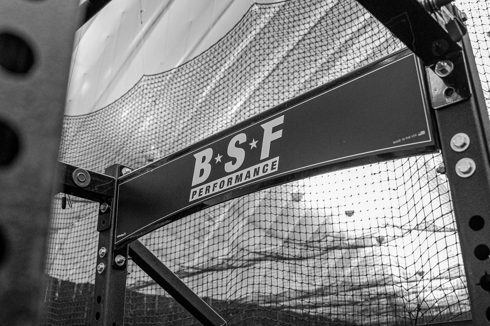

BUILT BY COACHES
WHO'VE BEEN THERE
Expert coaches who've walked the path—here to guide yours.
Expert coaches who've walked the path—here to guide yours.
BSF Performance is led by coaches who have competed, trained, and guided athletes through every stage of development, and that experience shapes how we coach every day. We pair that perspective with expert coaching and personalized programming to help athletes keep moving toward their goals.
We're not a gym. We're a development system. Every coach on our team is committed to using data, science, and proven methodology to build better athletes—and better people.
Whether you're training to go pro or earn a college scholarship, we're here to make it happen.

Our coaching staff brings decades of combined experience across professional, collegiate, and elite youth baseball and softball. They're experts, mentors, and advisors who care about your success.
Connect with our coaching team and start your journey to elite performance. Book your Metric Testing Evaluation today.
GET STARTED